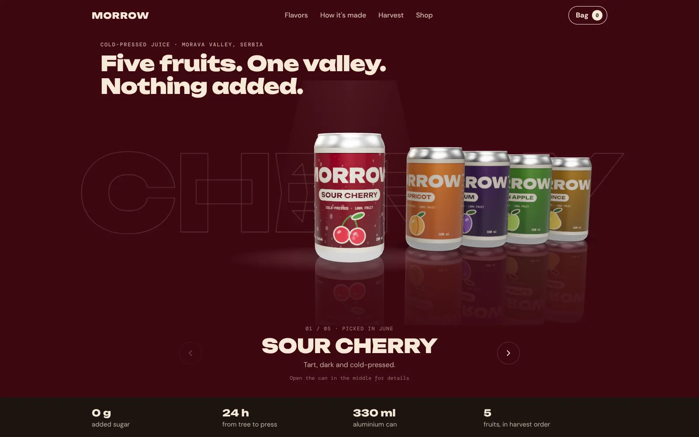
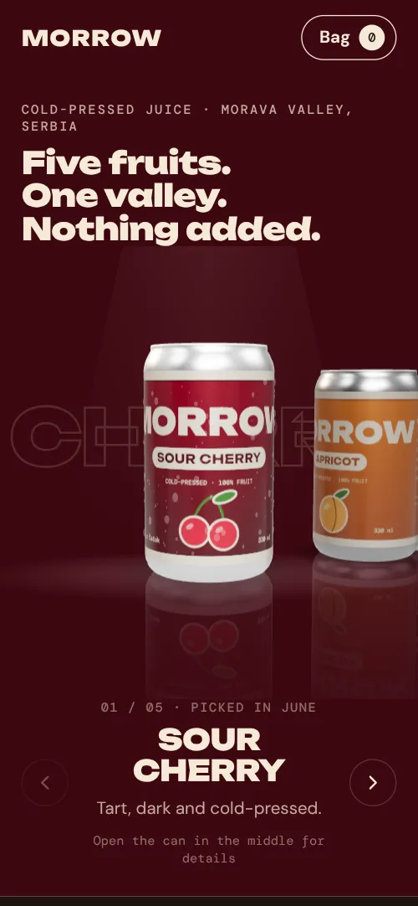

2026 · 3D web · koncept brenda
Morrow
Sajt za izmišljeni brend hladno ceđenih sokova iz doline Morave. Limenke su 3D, napravljene u kodu sa Three.js, bez gotovih modela i bez fotografija.
- Red 3D limenki: srednja je pod svetlom, bočne su tamnije, a sve se ogledaju u podu
- Klik na limenku je okreće i otvara detalje: ukus, nutritivne vrednosti i cenu
- Uvod u kome se svetla pale jedno po jedno, uz sliku dok se 3D učitava
- Kalendar berbe po današnjem datumu i korpa koja se pamti
- 8 Playwright testova na računaru i telefonu, bez ponovnog pokretanja palih testova